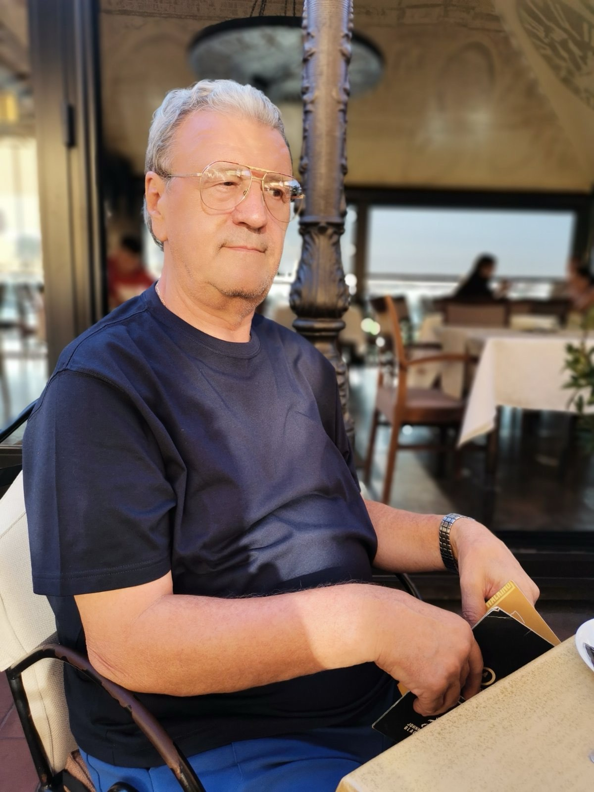
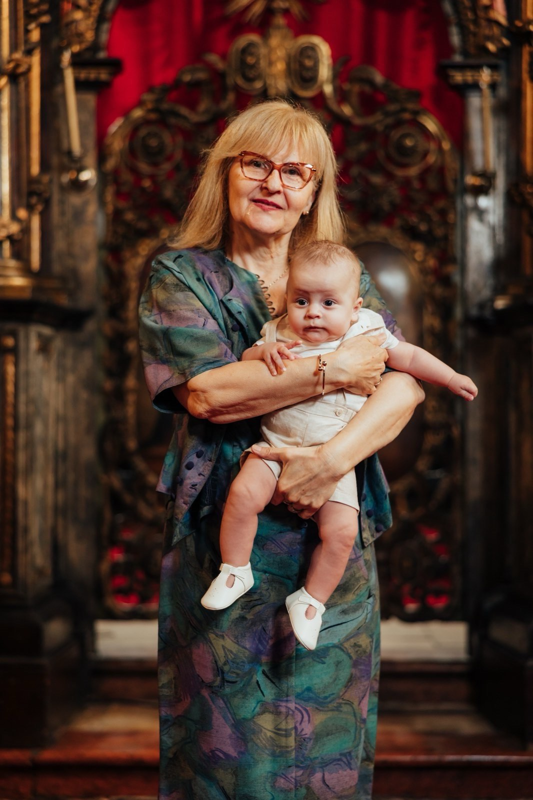
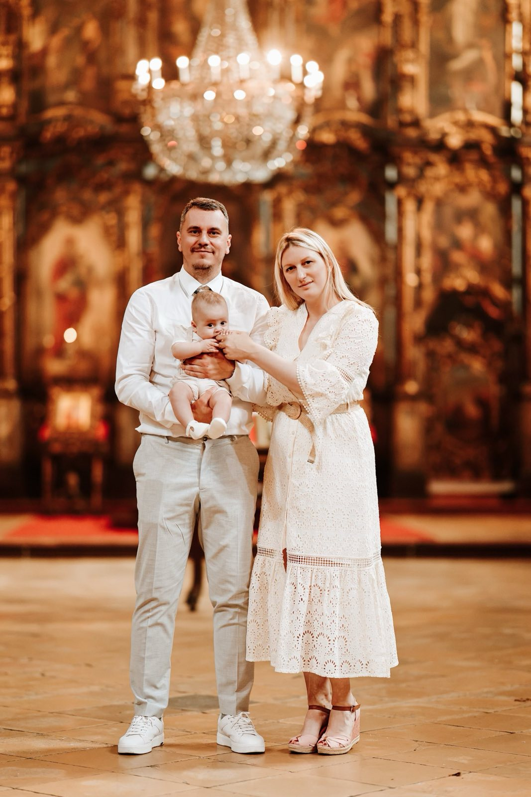

Naša priča
Tri decenije posvećenosti kvalitetu, porodičnih vrednosti i profesionalnog pristupa.
Kompanija izgrađena na poverenju
Marco doo je porodična kompanija iz Novog Sada, specijalizovana za distribuciju gasne opreme, inženjering i konsalting. Osnovana 1993. godine, kompanija je nastala iz vizije porodice Popović da srpskom tržištu obezbedi pristup kvalitetnoj svetskoj gasnoj opremi uz profesionalnu tehničku podršku.
Tokom više od tri decenije, izgradili smo mrežu pouzdanih partnerstava sa vodećim svetskim proizvođačima i stekli poverenje brojnih klijenata u Srbiji. Naš pristup je uvek bio isti — kvalitet, pouzdanost i dugoročni odnosi.
Ključni momenti
Osnivanje kompanije
Sekul i Branka Popović osnivaju preduzeće Marco doo u Kragujevcu. Kompanija započinje rad u oblasti trgovine bicikala, sa fokusom na transfer modernih tehnologija i inženjering u ovom sektoru industrije.
Rast i razvoj
Kompanija širi asortiman proizvoda i uspostavlja partnerstva sa svetskim proizvođačima gasne opreme. Gradi se reputacija pouzdanog snabdevača na tržištu Srbije.
Nova generacija
Marko Popović, sin osnivača, preuzima upravljanje kompanijom. Donosi svežu energiju i moderan pristup poslovanju, zadržavajući porodične vrednosti koje su temelj Marco doo.
Tri decenije snage
Danas je Marco doo sertifikovani partner vodećih svetskih proizvođača, sa stabilnom pozicijom na tržištu i planovima za dalji razvoj. Porodična tradicija i profesionalizam ostaju naš zaštitni znak.
Osnivači

Sekul Popović
OsnivačVizija, iskustvo i strateški razvoj — decenijsko iskustvo koje je oblikovalo kompaniju.

Branka Popović
SuosnivačStub stabilnosti i organizacije kompanije od njenog osnivanja.

Marko Popović
Generalni direktorNova energija i strateška vizija koja spaja porodičnu tradiciju sa modernim tržišnim trendovima.
Marko Popović
Generalni direktorNa čelo kompanije Marco d.o.o. 2018. godine dolazi Marko Popović, donoseći novu energiju i stratešku viziju koja spaja porodičnu tradiciju sa modernim tržišnim trendovima. Njegov dolazak na lidersku poziciju označio je početak nove etape u razvoju kompanije, usmerene na inovacije i diversifikaciju poslovanja u nove sektore. Simbol kontinuiteta i zajedničke budućnosti je i nastavak saradnje sa Alenom Gradaščevićem i firmom Fagas, čime su njih dvojica, kao druga generacija, preuzeli odgovornost za dalji rast i uspeh dveju kompanija.
Iz vrhunskog sporta u svet biznisa
Pre preuzimanja upravljačke uloge u porodičnom poslu, Marko je izgradio uspešnu profesionalnu košarkašku karijeru. Godine provedene u vrhunskom sportu oblikovale su ga kao lidera koji u biznis prenosi ključne sportske vrednosti: disciplinu, istrajnost i pobednički mentalitet usmeren na kontinuirani napredak tima.
Iskorak u nove industrije: Skaska destilerija
Pod Markovim vođstvom, kompanija Marco doo uspešno je iskoračila iz okvira tradicionalnih sektora. Na njegov predlog osnovana je Skaska destilerija doo, koja posluje u vlasništvu Marco doo. Sa vizijom proizvodnje premium pića najvišeg kvaliteta, destilerija je pokrenuta sa jasnim ciljem — osvajanje svetskog tržišta i postavljanje novih standarda u proizvodnji vrhunskih destilata.
Snaga partnerstva i zajednička vizija
U svakodnevnom poslovanju i strateškom vođenju obe kompanije, važnu ulogu ima Markova supruga, Iva Popović. Njen angažman i podrška u upravljanju ključnim procesima donose dodatnu stabilnost i novu perspektivu razvoju brendova. Zajedničkim snagama, Marko i Iva rade na modernizaciji gasnog sektora u okviru Marco doo i na globalnom pozicioniranju Skaske, negujući porodični karakter kompanije uz primenu najsavremenijih svetskih poslovnih praksi.
Branka Popović
SuosnivačBranka Popović je stub stabilnosti i organizacije kompanije od njenog osnivanja. Po završetku Ekonomskog fakulteta u Sarajevu, profesionalno iskustvo sticala je u Ljubljanskoj banci i UNIS Sarajevu, gde je ovladala upravljanjem složenim finansijskim procesima.
Ključna figura u svim fazama razvoja
Kao suosnivač kompanije Marco doo, Branka je ključna figura u svim fazama razvoja — od Kragujevca do strateške selidbe u Novi Sad 2004. godine. U poslovni svet unosi nesvakidašnju smirenost, strpljenje i ljubaznost, osobine koje su omogućile izgradnju dugoročnog poverenja sa klijentima i partnerima.
Sekul Popović
OsnivačIza kompanije Marco doo stoji decenijsko iskustvo njenog osnivača, Sekule Popovića, čija je profesionalna putanja obeležena radom u vrhunskim industrijskim sistemima i strateškim vizijama koje su oblikovale moderno poslovanje kompanije.
Svoj put Sekul započinje u Sarajevu odmah nakon srednje škole. Uz rad, pokazujući izuzetnu disciplinu, Ekonomski fakultet završava u rekordnom roku od svega 20 meseci, postavljajući temelje za karijeru definisanu efikasnošću i ekonomskom preciznošću.
Ekspertiza u industrijskim gigantima
- PRETIS Vogošća: Mesto sticanja prvih iskustava u tehnološki najnaprednijim procesima ovog čuvenog industrijskog giganta.
- UNIS Sarajevo: Kao stručnjak čiji su rezultati brzo prepoznati, napreduje do pozicije člana Upravnog odbora cele korporacije.
- UNIS Fabrika bicikala: Upravljanje složenim sistemima proizvodnje dalo mu je neprocenjivo menadžersko iskustvo koje je postalo temelj sopstvenog biznisa. U ovom periodu uspešno je realizovan transfer tehnologije za dve fabrike bicikala u Bugarskoj i Iranu.
Osnivanje Marco doo i transver tehnologija
Sa vizijom o stvaranju sopstvenog preduzeća, Sekule Popović sa suprugom Brankom 1993. godine u Kragujevcu osniva kompaniju Marco doo. Tokom prve decenije, kompanija se pozicionira kao lider u spoljnoj trgovini bicikala, ali i kao nosilac tehnološkog progresa, uvodeći nove tehnologije u kompanije poput Oriona iz Kragujevca i Planet Bike-a iz Kruševca.
Strateška transformacija i gasni sektor
Prekretnica u poslovanju nastupa 2004. godine, kada Marco doo seli svoje sedište u Novi Sad i pravi strateški zaokret ka gasnom sektoru privrede. Ovaj novi pravac bio je prirodan nastavak oslanjanja na proverene vrednosti i stara partnerstva.
U saradnji sa dugogodišnjim poslovnim prijateljem iz vremena UNIS-a, g. Sejom Gradaščevićem i njegovom kompanijom Fagas doo, Sekul Popović pokreće snažan ciklus osvajanja novih tržišta. Spoj decenijskog poverenja, industrijskog znanja i nove energije u gasnom sektoru omogućio je kompaniji Marco doo da postane prepoznatljiv i pouzdan partner u ovoj vitalnoj privrednoj grani.
Principi koji nas vode
Poverenje
Dugoročni odnosi zasnovani na poštenju i transparentnosti u svakom koraku saradnje.
Kvalitet
Samo sertifikovani proizvodi proverenih proizvođača koji zadovoljavaju najviše standarde.
Porodica
Porodične vrednosti u poslovanju — posvećenost, odgovornost i briga o svakom klijentu.
Razvoj
Konstantno unapređenje usluga, praćenje trendova i ulaganja u nove tehnologija.
Želite da sarađujete sa nama?
Javite nam se i razgovarajmo o tome kako možemo da vam pomognemo.